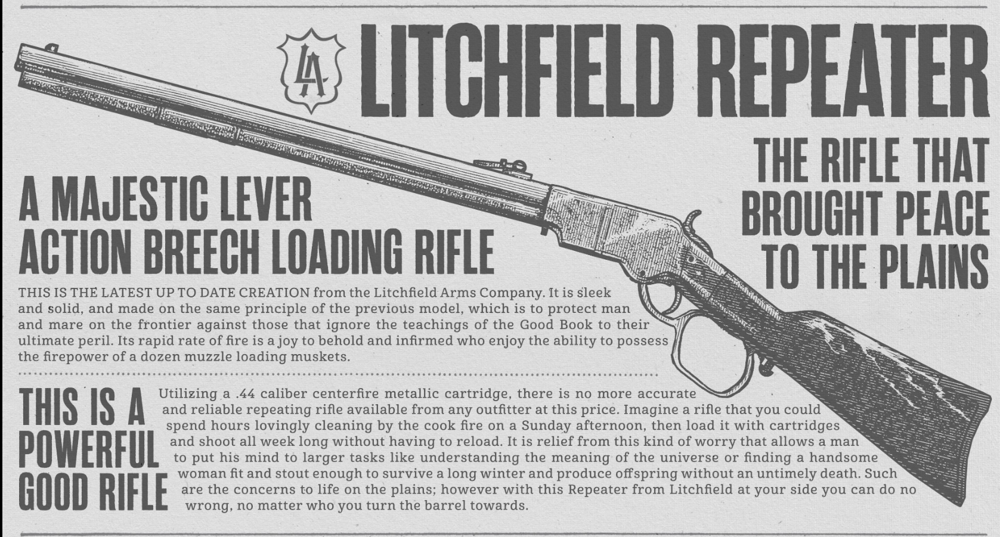
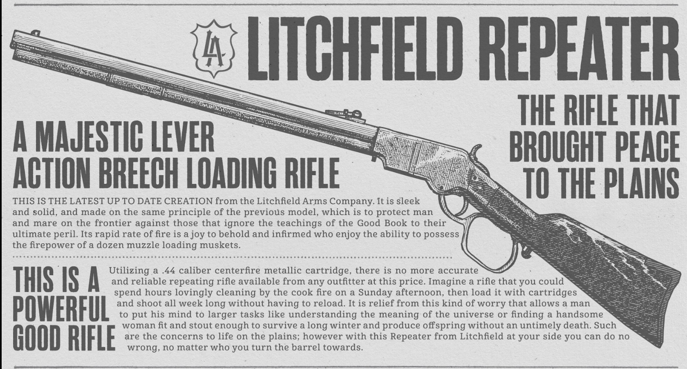

Detail, depth and choice define every aspect of Red Dead Redemption 2, and weapons are no exception. There are over 50 unique usable weapons, a massive range of options for customization, and a wide selection of different ammunition types to improve accuracy, range or damage. The more a gun is used, the better it will perform, but it will also start to degrade over time if not looked after, so a trusty sidearm needs to be kept oiled and clean.
 
